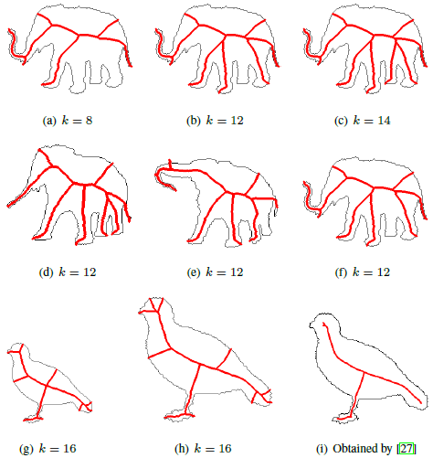
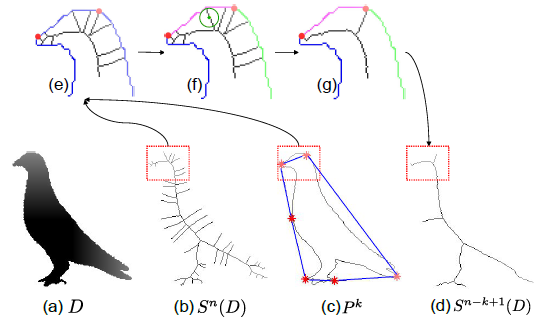
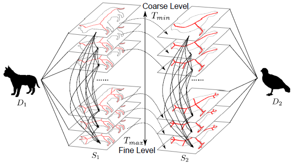
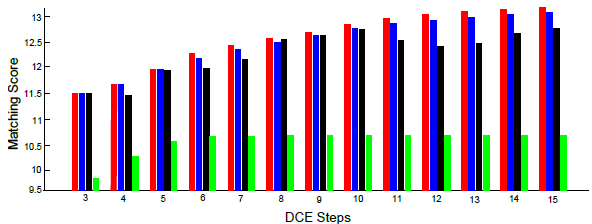
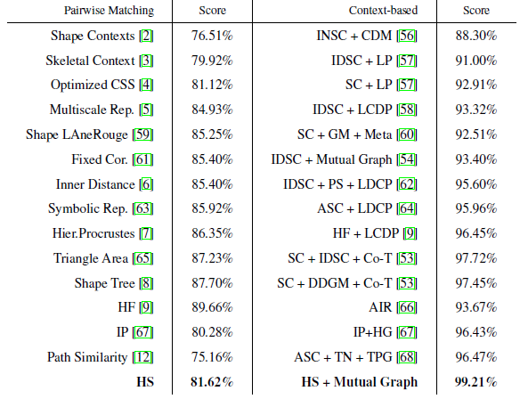

Pattern Recognition
Cong Yang, Oliver Tiebe, Kimiaki Shirahama, Marcin Grzegorzek
Research Group for Pattern Recognition, University of Siegen

Figure1：Challenge of the traditional skeleton-based object matching methods. DCE requires a proper stop parameter k to calibrate the pruning power. However, different stop parameters for the same object (the first row) or the same parameter for different objects (the second row) lead to visually different skeletons in which some important parts are missing (legs in (a), (b), (e), (f)). Furthermore, even if we find the best stop parameter, skeletons of the same object sometimes differ if the scale is changed ((g) and (h)). This is because the vanishing of shape parts is unavoidable when the resolution decreases. Therefore, fixing k for skeleton pruning is not a proper solution for all objects.
Abstract
The skeleton of an object provides an intuitive and effective abstraction which facilitates object matching and recognition. However, without any human interaction, traditional skeleton-based descriptors and matching algorithms are not stable for deformable objects. Specifically, some fine-grained topological and geometrical features would be discarded if the skeleton was incomplete or only represented significant visual parts of an object. Moreover, the performance of skeleton-based matching highly depends on the quality and completeness of skeletons. In this paper, we propose a novel object representation and matching algorithm based on hierarchical skeletons which capture the shape topology and geometry through multiple levels of skeletons. For object representation, we reuse the pruned skeleton branches to represent the coarse- and fine-grained shape topological and geometrical features. Moreover, this can improve the stability of skeleton pruning without human interaction. We also propose an object matching method which considers both global shape properties and fine-grained deformations by defining singleton and pairwise potentials for similarity computation between hierarchical skeletons. Our experiments attest our hierarchical skeleton-based method a significantly better performance than most existing shape-based object matching methods on six datasets, achieving a 99.21% bulls-eye score on the MPEG7 shape dataset.
Overview

Figure 2: Illustration of original shape D, initial skeleton S^{n}(D), simplified polygon P^{k} and the pruned skeleton S^{n-k+1}(D) generated by DCE with k = 10.

Figure 3: Illustration of the matching algorithm for hierarchical skeletons. All skeletons in S_{1}and S_{2} are ordered from coarse level (T_{min}) to fine level (T_{max}).
Results

Figure 4: Score comparison between different matching methods: the proposed method (red), the singleton potential (blue), the global optimum matching method (green) and the PS method (black). Horizontal axis represents the hierarchical skeleton levels and vertical axis represents the retrieval score.
Table 1: Bulls-eye score on the MPEG7 Dataset. HS denotes the hierarchical skeleton method.

Acknowledgments
Research activities leading to this work have been supported by the China Scholarship Council (CSC) and the German Research Foundation (DFG) within the Research Training Group 1564 (GRK 1564).
BiBTex
@article {Yang2016OMW,
title = {Object Matching with Hierarchical Skeletons},
author = {Cong Yang and Oliver Tiebe and Kimiaki Shirahama and Marcin Grzegorzek},
journal = {Pattern Recognition},
volume = {55},
pages = {183-197},
year = {2016},
}
Source Code: [Skeleton Pruning] [Skeleton Graph] [Skeleton Matching]
Paper: PDF